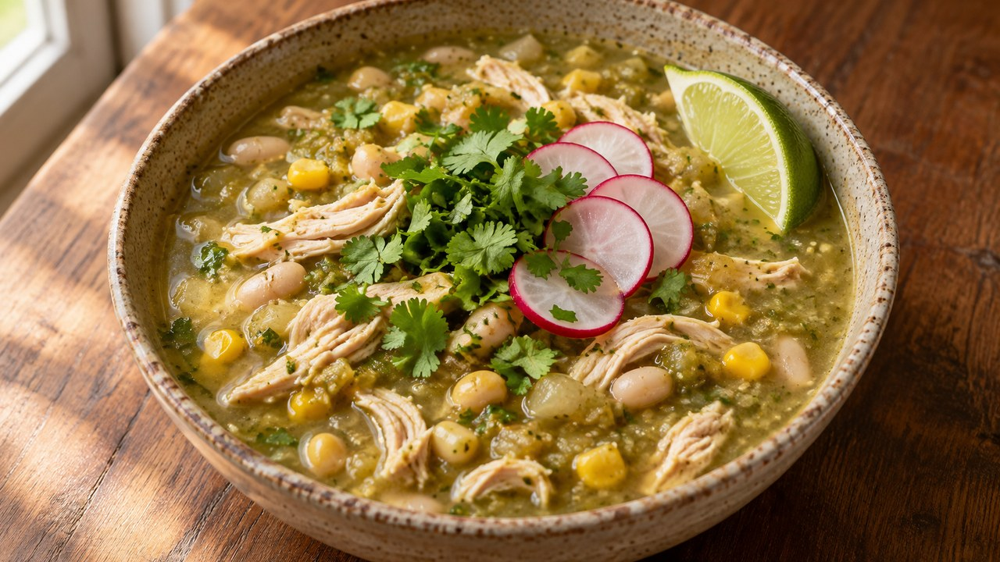

Mexican-inspired · Dinner · Serves 5 · About 40 minutes
Salsa Verde Chicken and Great Northern Bean Chili

Ingredient amounts are estimates when scaled. AnyList imports the original quantities.
Ingredients
- 1 3/4 lb boneless skinless chicken breast
- 2 cans (15 oz each) Great Northern beans, drained and rinsed
- 1 1/2 cups frozen corn
- 3 cups chicken broth
- 1/2–1 cup salsa verde, depending on heat
- 1 medium onion, diced
- 3 garlic cloves, minced
- 2 tsp ground cumin
- 1 Tbsp olive oil
- 1/4 cup chopped cilantro
- 4 regular radishes, thinly sliced
- 1 lime, cut into wedges
Instructions
- Heat the olive oil in a soup pot over medium heat. Sauté the onion until soft, about 5 minutes. Add the garlic and cumin and stir for 30 seconds.
- Add the broth, chicken breast, and 1/2 cup salsa verde. Bring to a gentle simmer and cook until the thickest part of the chicken reaches 165°F. Transfer the chicken to a plate, shred it, and return it to the pot.
- Stir in the Great Northern beans and corn and simmer for 5–8 minutes. Mash a spoonful or two of the beans against the side of the pot to thicken the chili.
- Taste and add more salsa verde if desired. Serve with cilantro, sliced radishes, lime, and any remaining salsa verde on the side.